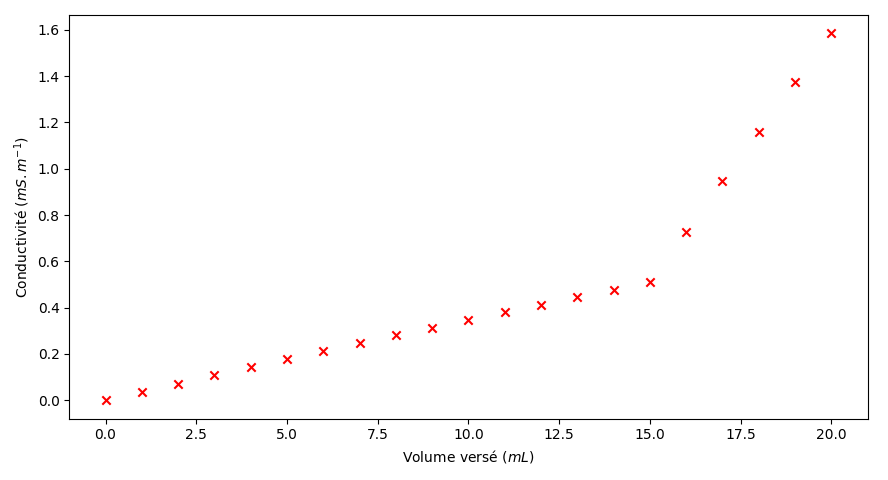

Acide butyrique
Les travaux de Crevreul lui ont permis d’isoler un acide gras à quatre
atomes de carbone, qu’il a nommé « acide butyrique », dérivé du latin
butyrum signifiant « beurre », à cause de son odeur
caractéristique de beurre rance. Pour la suite, l’élément but(y)- a été
repris pour former les noms de molécules à quatre atomes de carbone
dont, avec le suffixe -ane des alcane, celui du butane.
L’acide butyrique est un acide carboxylique possédant une chaîne carbonée, dérivée du butane. Il est présent dans le couple acide butyrique/ion butyrate (/).
Déterminer le schéma de Lewis de l’acide butyrique. (1pt)
Justifier le caractère "acide" de la molécule. (1pt)
Écrire la demi-équation associée à l’acide butyrique. (1pt)
Écrire l’équation de la réaction mise en jeu lorsque l’acide butyrique est mis dans l’eau. (1pt)
On réalise une solution d’acide butyrique à partir d’une masse de 2.2 mg dissous dans 500 mL d’eau. En partant de l’hypothèse que tout l’acide réagit avec l’eau, déterminer le pH de la solution obtenue. (1pt)
Le butanoate de méthyle est un composé chimique utilisé comme arôme pour son odeur de pomme. Il est obtenu à partir de l’acide butyrique.
Recopier puis compléter le schéma de Lewis du butanoate de méthyle suivant, puis identifier les éventuels groupes fonctionnels. (1pt)
Préciser si l’ester formé a un caractère acide. (1pt)
Attribuer chacun des spectres suivants à la molécule (acide butyrique ou butanoate de méthyle) correspondante en justifiant. (1pt)
Les coloration capillaires classiques sont des solutions basiques à
base d’ammoniaque. Elles sont classées en deux catégories en fonction de
l’utilisation : les colorations commerciales, avec une teneur de 27 à
30 % d’ammoniaque et les mélanges professionnels avec une teneur
maximale de 6 %.
On propose de déterminer la concentration en ammoniaque () d’une
solution servant de base pour une préparation commerciale de coloration
capillaire notée \(S_0\) de
concentration notée \(c_0\). Pour cela,
on réalise un titrage sur 10 mL de solution diluée, grâce à une solution
titrante d’acide chlorhydrique de concentration \(c_A\) = 1E-3 mol L−1.
Le suivi de la réaction se fait grâce à une sonde de conductimétrie et les points mesurés sont reportés dans le graphique du document fourni.
La solution à titrer semble trop concentrée pour un titrage direct, une d’un facteur 10 est donc réalisé pour créer une solution titrée \(S_1\) de concentration notée \(c_1\). Lister le matériel nécessaire pour réaliser 50 mL de solution \(S_1\). (1pt)
Quelles sont les limites d’un suivi par conductimétrie ? (1pt)
Écrire la réaction de se produisant entre l’ammoniac et l’eau. Puis celle se produisant entre l’acide chlorhydrique et l’eau. (2pts)
En déduire la réaction support du titrage. (1pt)
Réaliser un schéma du titrage. (1pt)
Compléter le tableau suivant en faisant figurer l’évolution de la quantité de matière de chaque espèce ionique dans le milieu au cours du titrage.(1pt)
| Espèce ionique | ||||
|---|---|---|---|---|
| Avant équivalence | ||||
| A l’équivalence | ||||
| Après l’équivalence |
En vous aidant du tableau précédent, et des valeurs de conductivité molaires ioniques fournies, justifier l’allure de la courbe de titrage. (2pts)
Déterminer, en explicitant la méthode employée, la valeur du volume équivalent. (1pt)
Calculer la valeur de la concentration \(c_1\). (2pts)
Déterminer la valeur de la concentration de la solution de coloration capillaire. (0.5pt)
Vérifier que les valeurs obtenues sont en accord avec la teneur en ammoniaque fournie par le vendeur.(0.5pt)

Données :
Couples acide/base : / ; / ; /
Densité de la base pour coloration capillaire : \(d\) = 0.9
Masse molaire de l’ammoniac : \(M\) = 17 g mol−1
Conductivités molaires ioniques :
\(\lambda\)() =
7.35 mS m2 mol−1
\(\lambda\)() =
7.63 mS m2 mol−1
\(\lambda\)() =
19.8 mS m2 mol−1
\(\lambda\)() =
35.0 mS m2 mol−1
Tableau des références IR
| Liaison | Condition | Nombre d’onde \(\overline{\nu}\) ( cm) |
|---|---|---|
| Sans pont hydrogène | 3580 - 3650 (bande fine) | |
| Avec pont hydrogène | 3200 - 3400 (bande large) | |
| Si cette liaison fait partie du groupe caractéristique carbonyle | 2500 - 3200 (bande large) | |
| Si cette liaison fait partie du groupe carbonyle | 1650 - 1730 | |
| Si cette liaison fait partie du groupe carboxyle | 1680 - 1710 | |
| Si cette liaison fait partie du groupe caractéristique ester | 1700 - 1740 | |
| Si cette liaison fait partie du groupe caractéristique amide | 1650 | |
| Si cette liaison ne fait pas partie d’un sycle aromatique | 1640 - 1680 | |
| Si cette liaison fait partie d’un sycle aromatique | 1500 - 1580 |